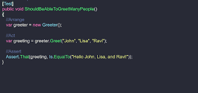

Software Testing
Concept
Software Testing checks the actual software product matches expected requirements and to ensure that software product doesn't deviate from the requirements and is bug free.The purpose of software testing is to identify errors, any deviations from the actual requirements.
ARRANGE-ACT-ASSERT
Arrange-Act-Assert ,popularly known as the AAA testing is a great way to structure test cases. It describes the order of operations: Arrange inputs and targets. Arrange steps should set up the test case. It handles all of these operations at the start of the test. Act on the target behavior. Act steps should cover the main thing to be tested. This could be calling a function or method, calling a REST API, or interacting with a web page. Keep actions focused on the target behavior.
Assert expected outcomes. Act steps should elicit some sort of response. Assert steps verify the goodness or badness of that response. Sometimes, assertions are as simple as checking numeric or string values. Other times, they may require checking multiple facets of a system. Assertions will ultimately determine if the test passes or fails.
Arrange-Act-Assert is powerful because it is simple. It forces tests to focus on
independent, individual behaviors. It separates setup actions from the main actions. It
requires test to make verifications and not merely run through motions. Notice how the
pattern is not Arrange-Act-Assert-Act-Assert – subsequent actions and assertions belong in
separate tests! Arrange-Act-Assert is a great pattern to follow for writing good functional
tests

AAA testing with Calculator
Let's look at given example a simple calculator class that adds and subtracts:
 Calculator Unit Testing
Here, let us take a very simple example of unit testing of addition function
Calculator Unit Testing
Here, let us take a very simple example of unit testing of addition function
def test_calculator_add_result():
"""testing calculator result """
calc = Calculator()
result = calc.add(1,2)
assert result == 3
his is the code that we will test. The code is very simple, the
class contains only addition function and it will always return the sum of the two numbers
.Now, add one unit test application to the solution
In the above example, if no parameters are passed then
assert calc.get_result()==0.
The actual program is the calculator folder but the tests are in the tests folder .It
contains a series of tests to check that the operations performed by the calculator are
correct
The code that is checking the operation is in test folder
AAA testing is done by instating a class.
calc= Calculator()
Act by calling a method to be tested -performing the action of adding test
calc.add_number(4)
Assert that the results are correct.This actually tests the result
assert calc.result==4
AAA testing with External data
This article tends to explain how to write a program to read from a csv file .We have a csv file that has
column 1 and column 2 which have number1 and number2 values on which the arithmetic operations
addition, subtraction, multiplication and division needs to be performed.We need to import
pandas to read from the csv files.Let us look in to the simple code below.
import pandas as pd
datafile = pd.read_csv("Addition - Sheet1.csv")
datafile["addition"]=datafile["number1"] + datafile["number2"]
datafile["subtraction"]=datafile["number1"] + datafile["number2"]
datafile["multiplication"]=datafile["number1"] + datafile["number2"]
datafile["division"]=datafile["number1"] + datafile["number2"]
print(datafile)